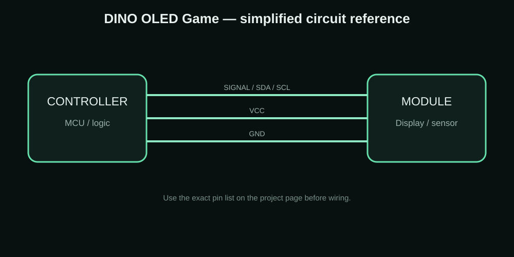

ESP32 • OLED • GAME
ESP32 0.96-inch OLED DINO Game
A small OLED game project where the ESP32 draws a simple DINO-style game on a 128×64 SSD1306 display.
MY PROJECT / REFERENCE IMAGE
CONNECTION / CIRCUIT REFERENCE

WHY I MADE IT
The idea behind the project
I wanted to make something interactive with the same small OLED display instead of using it only for sensor values. A simple game is a good test because the ESP32 has to refresh the screen continuously and react to a button at the same time.
This page is written as a build record: the goal is to explain what the project is, how the parts are connected, what to test and where the design can be improved.
Components I used
| Component | Purpose |
|---|---|
| ESP32 | Game controller |
| 0.96-inch SSD1306 OLED | Game screen |
| Push button | Player input |
| Breadboard + jumper wires | Prototype wiring |
Connections
| Connection | Details |
|---|---|
| OLED SDA | ESP32 I2C SDA pin used by the sketch |
| OLED SCL | ESP32 I2C SCL pin used by the sketch |
| OLED VCC/GND | Module-rated supply and common ground |
| Button | ESP32 digital input with the pull-up/pull-down method used in the sketch |
How I built and tested it
- Initialize the OLED and input button.
- Draw the player and ground/obstacle elements.
- Move the obstacle across the display every game update.
- Read the button and move the player when it is pressed.
- Check for a collision.
- Increase the score while the player survives and show a game-over state after a collision.
Problems, limits and things to check
The screen is only 128×64, so the game graphics need to stay simple. Drawing too much unnecessary content can make the animation look less responsive. Keeping the game loop small and using simple bitmap shapes makes the project smoother.
What this project can teach you
- Learning OLED graphics
- Button input
- Simple game loops
- Collision logic
- ESP32 embedded UI
Downloads
The project ZIP keeps the available project resources together. For a new build, check the code, wiring and board pinout before uploading.
Download Project ZIPAdvertisement